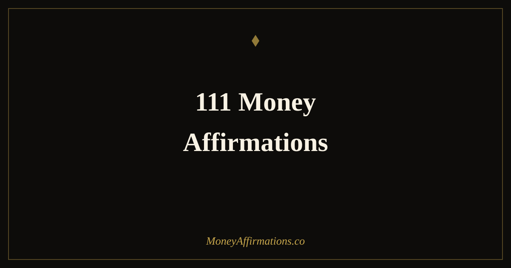

111 Money Affirmations: The Complete List for Every Financial Goal

Most money affirmation lists give you the same twenty statements recycled in slightly different language. They are fine for getting started, but they rarely address the full spectrum of financial beliefs that shape a person's relationship with money. There are beliefs about receiving, about earning, about worthiness, about saving, about investing, about debt, about security, about generosity — and a belief that is not addressed stays intact.
This list of 111 money affirmations is organised by financial belief area, so you can identify exactly where your most active resistance lives and focus your practice there. Read through the full list once, slowly, and notice which statements create friction or feel impossible. Those are your most valuable affirmations — the ones pointing directly at the beliefs that are costing you financially right now.
What are money affirmations?
Money affirmations are present-tense statements that replace limiting beliefs about money with beliefs aligned with financial growth, security, and abundance. They work through consistent repetition — not because repetition alone creates change, but because repeated exposure to a new belief, paired with emotional engagement and aligned behaviour, gradually shifts the default mental response to financial situations.
The number 111 is meaningful in two ways. Practically, a list of this size covers enough distinct belief territories to be genuinely comprehensive. Symbolically, 111 is associated in numerology with new beginnings and the amplification of intention — making it a natural fit for a financial reset practice. Use the full list to find your five most relevant affirmations, then rotate through the list as your financial beliefs and goals evolve. For the core collection that complements this list, see the money affirmations collection.
111 money affirmations
Abundance and receiving
- I am open to receiving money from expected and unexpected sources.
- Money flows to me freely, frequently, and in increasing amounts.
- I welcome abundance into every area of my financial life.
- I receive money with gratitude and use it with intention.
- There is more than enough wealth in the world for me to receive my share.
- I allow prosperity to find me without resistance or guilt.
- My capacity to receive abundance grows stronger every day.
- I am in the right place at the right time to receive financial good.
- Money comes to me through multiple channels simultaneously.
- I am a generous receiver and I welcome financial gifts of every size.
Worthiness and self-belief
- I am worthy of a financially abundant life, exactly as I am today.
- I deserve to be paid well for the value I create.
- My worth is not determined by my bank balance — and both are growing.
- I release every inherited belief that says I am not meant to be wealthy.
- I am enough, and I have enough, and more is always on its way.
- My desire for financial security and abundance is healthy, not greedy.
- I forgive myself for past money mistakes and move forward with clarity.
- I am the kind of person who builds wealth and sustains it with good character.
- I deserve the financial life I am working toward and I claim it fully.
- My self-worth and my net worth grow together as I evolve.
Earning and income
- My income grows consistently as I grow in skill, confidence, and action.
- I earn well, and I have room to earn even more.
- I charge what my work is worth and I do so without hesitation or apology.
- New income streams open to me as I remain alert and take aligned action.
- My earning potential is expanding — there is no ceiling on what I can make.
- I am paid generously because I deliver genuine, consistent value.
- Every skill I develop increases the amount I am able to earn.
- I ask for raises, higher rates, and better terms because I deserve them.
- Money comes to me through the work I love and through channels I have not yet imagined.
- I increase my income every year through deliberate action and expanding expertise.
Mindset and beliefs about money
- Money is a tool that amplifies who I am — and who I am is generous and purposeful.
- I release all fear, shame, and guilt around money once and for all.
- My thoughts about money are positive, expansive, and aligned with abundance.
- I no longer believe that money is scarce — I see evidence of abundance everywhere.
- I am safe with money and money is safe with me.
- The more comfortable I become with money, the more of it I attract.
- I replace every scarcity thought with a statement of financial truth and possibility.
- My money mindset is one of my greatest financial assets.
- I choose to believe that financial abundance is both available and deserved by me.
- Every day I deepen my understanding of money and my relationship with it improves.
Saving and financial security
- I save consistently because my future self deserves the security I can build today.
- Each time I save money, I affirm my commitment to my own financial freedom.
- I have a growing financial cushion that protects me and gives me peace of mind.
- Saving feels good because it is an act of self-respect and long-term love.
- My emergency fund grows stronger every month and I sleep better because of it.
- I am building financial security that will support me and those I love for years.
- I spend less than I earn and invest the difference with intention and wisdom.
- My savings habit is consistent, automatic, and deeply aligned with my values.
- Financial security is not a luxury — it is a priority I honour every single month.
- I am proud of every dollar I save and every unnecessary expense I decline.
Investing and wealth-building
- I invest wisely and my money grows even while I sleep.
- I understand wealth-building well enough to take consistent, confident action.
- My investments compound over time and build a financial future I am excited about.
- I am not afraid of investing — I approach it with curiosity and increasing knowledge.
- Wealth-building is a skill and I commit to learning it with patience and persistence.
- Every investment I make is a vote for my long-term financial freedom.
- I am building multiple streams of income that grow regardless of how hard I work.
- I take a long-term view of my financial life and I make decisions accordingly.
- My assets grow year over year and my financial security deepens with them.
- I invest in my own growth — in knowledge, in skills, and in financial instruments — consistently.
Debt and financial challenges
- I face my financial challenges with clarity, courage, and practical problem-solving.
- I am actively reducing my debt and every payment brings me closer to freedom.
- My debt does not define me — my direction does, and my direction is toward freedom.
- I handle money challenges calmly and find solutions with a clear, resourceful mind.
- Every financial obstacle I overcome makes me stronger and wiser with money.
- I am releasing financial burdens that no longer serve me and replacing them with assets.
- I choose freedom over avoidance — I look at my finances clearly and deal with them directly.
- I am becoming debt-free through consistent, committed, intelligent action.
- Financial setbacks are temporary. My commitment to financial health is permanent.
- I ask for help with money when I need it — that is strength, not weakness.
Spending and financial decisions
- I spend money intentionally, in alignment with my values and my long-term goals.
- Every financial decision I make reflects the prosperous person I am becoming.
- I pause before purchases and ask: does this serve my financial future?
- I am free from impulsive spending — I choose from values, not from emotion.
- I create a budget not as a restriction but as a map toward the life I want.
- I manage my money with care, attention, and genuine respect for what it represents.
- I am at peace with my spending when it is conscious, intentional, and aligned.
- I know the difference between needs and wants, and I choose wisely between them.
- Every pound and dollar I manage well increases my financial confidence.
- I am a skilled, thoughtful, and effective steward of the money in my life.
Generosity and financial flow
- I give freely because I know abundance always returns to an open and generous heart.
- My generosity is an expression of my financial strength, not a depletion of it.
- The more I give from a place of genuine abundance, the more flows back to me.
- I tithe, tip, donate, and share because I live in the certainty that there is enough.
- Money flows through me and leaves trails of good wherever it goes.
- I am generous with my time, my money, and my knowledge — and all of it returns multiplied.
- Giving from abundance feels natural, joyful, and completely aligned with my values.
- I hold money lightly enough to share it and firmly enough to grow it.
- My financial life is a cycle of receiving, using well, and giving — and all three parts thrive.
- I am grateful to be in a position to give, and I use that position with intention.
Financial freedom and the future
- I am building a financially free life and I move toward it every single day.
- My future self is financially secure, confident, and deeply grateful for the choices I make now.
- I am on track for the financial life I have always wanted — and I am accelerating.
- Financial freedom is not a dream — it is a destination I am actively navigating toward.
- I make financial decisions today that my future self will celebrate.
- I am patient with the journey and certain of the destination.
- Every year my financial life is measurably better than the year before.
- I live with intention today so that tomorrow I can live with complete freedom.
- I am leaving a financial legacy that reflects my values and my love for the people I care about.
- My financial future is bright, purposeful, and already taking shape.
Identity and daily practice
- I am a person who thinks about money clearly, acts on money wisely, and grows financially every year.
- My financial identity is strong, healthy, and grounded in real self-knowledge.
- I start each day with the intention of making one good financial decision.
- I surround myself with people who talk about money positively and build it deliberately.
- I invest in my financial education because knowledge is the highest-return asset I own.
- I am consistent with my money practice — and consistency is how ordinary results become extraordinary.
- I celebrate every financial milestone, however small, because every one of them counts.
- Money and I have a healthy, honest, growing relationship that benefits every area of my life.
- I am financially responsible, financially ambitious, and financially free — all at once.
- My daily habits with money are building the exact financial life I have chosen for myself.
- I am grateful for money, I am good with money, and every day I get better.
How to use these affirmations
Read through the full list once without stopping to judge any statement. Simply notice which ones create a genuine sense of ease and which ones create friction or a quiet "but that's not true." The friction is your map. Circle or note the statements that feel furthest from your current reality in the belief areas that matter most to your financial situation right now. Those become your active affirmation set.
From those, choose five to seven for daily use. Say them each morning before screens, slowly and aloud, pausing on any that still create resistance. Rotate through the full 111 as your beliefs evolve — when a statement starts to feel completely neutral (no stretch, no resistance), it has done its work and you can move to the next one. The goal is not to complete the list; it is to use the list as a living, rotating resource that meets you where you are and moves with you as you grow.
Why 111 matters: the numerology and the neuroscience
The number 111 holds significance in numerological traditions as a master number associated with new cycles, aligned thought, and the point at which inner intention begins to manifest in outer reality. Practitioners who work with angel numbers interpret seeing 111 as a signal to pay attention to thoughts and intentions, as they are particularly potent in that moment. Whether you hold a spiritual or secular view of this, the practical application is the same: moments of heightened attention are exactly when affirmations are most effective.
From a neuroscientific perspective, what makes a comprehensive list like this valuable is the concept of belief specificity. General affirmations ("I am wealthy") often fail to move the needle because they are too broad to address the specific belief causing a specific financial problem. A list of 111 targeted statements across distinct belief territories allows you to match the affirmation precisely to the block — which is what produces the cognitive shift that actually changes behaviour. Research on self-affirmation theory (Steele and Liu, 1983) shows that the most effective affirmations are those that address the specific domain where self-concept is threatened. This list is built to give you that specificity.
Tips to make them work faster
- Read the full list in one sitting to find your five. That first read is a diagnostic. The friction is the data.
- Keep your active five on a card or in your phone. Access matters. Affirmations you can see quickly are affirmations you actually use at the right moments.
- Rotate by financial focus, not by calendar. When your financial priority shifts — from debt to saving, from saving to investing — rotate to the relevant section of this list.
- Use the money mindset section when nothing else seems to land. Often, deeper beliefs about what money is and who deserves it need clearing before the income, savings, or investing affirmations take hold.
- Say the hardest one three times. The affirmation that makes you wince is worth triple repetition. That wince is where the real money work is.
Frequently Asked Questions
Why 111 money affirmations specifically?
111 is associated in numerology with new beginnings, aligned intention, and the amplification of thought — making it a popular number for manifestation practices. Practically, a list of this size covers enough distinct belief territories to be genuinely comprehensive, giving you real choice about which statements to use and rotate. Rather than repeating the same five affirmations indefinitely, you can select the ones most relevant to your current financial challenge or growth edge.
Should I try to say all 111 affirmations each day?
No. Reading all 111 in one sitting is a useful orientation exercise — it helps you identify which statements resonate and which create resistance. Your daily practice should use five to ten, chosen specifically for your current financial focus. Rotate them as your beliefs and goals evolve. The full list is a resource to draw from, not a script to recite in full.
Which section of these 111 affirmations should I focus on first?
Start with whichever section creates the most internal friction. If worthiness statements feel uncomfortable, begin there — that discomfort is information about where your limiting beliefs are most active. If the saving and investing section feels remote, those affirmations are doing the most work for you right now. The section that feels hardest to accept is almost always the section most worth spending time in.
For a curated selection of the most powerful statements from across all these areas, explore the full money affirmations collection — the comprehensive resource that this post draws from and expands upon.